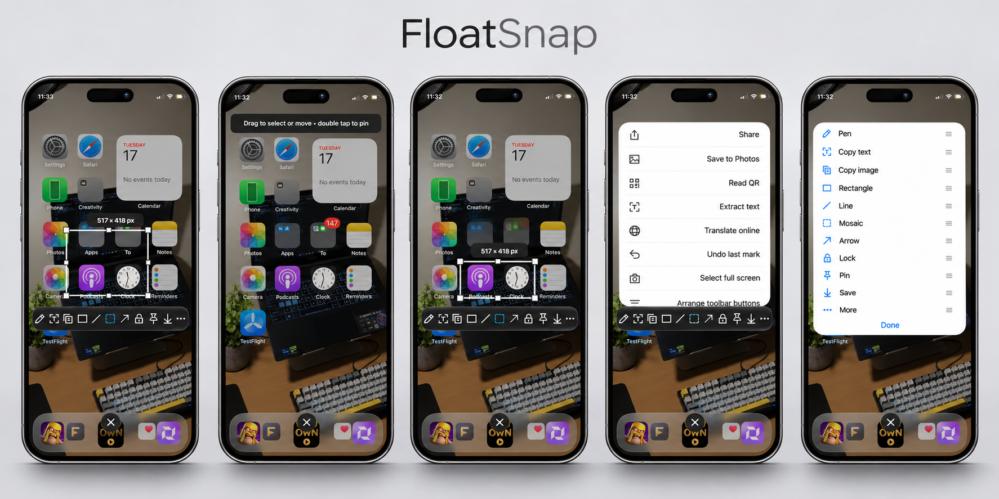

FloatSnap lets you crop a screen region, resize and move it, annotate with pen, arrows, lines and rectangles, hide details with mosaic, lock or pin crops, copy images, extract Arabic and English text, read QR codes, translate online, save to Photos, share and rearrange toolbar controls. OCR accuracy varies by image. Tested on iPhone X, iOS 16.7.x, Dopamine Rootless. iOS 17, 18 and 26 compatibility is experimental. Gallery shows conceptual device frames with AI-rendered screenshot artwork.
